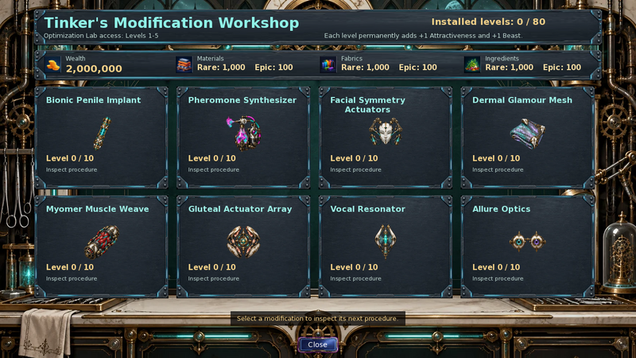
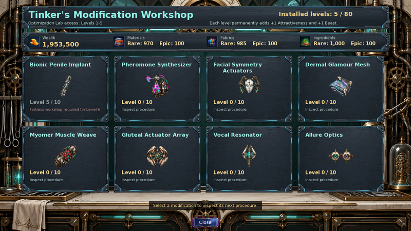
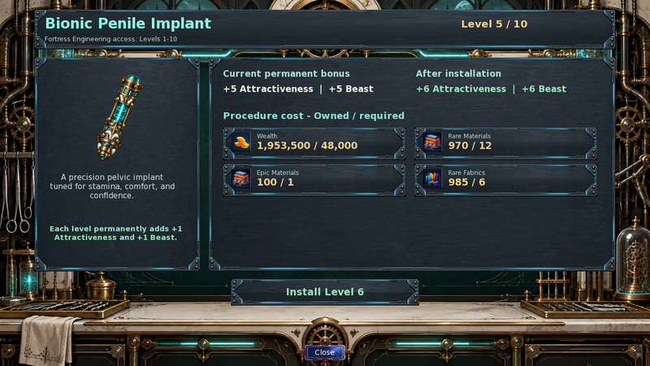

Player wiki noticeThis community-maintained page may contain gameplay, story, and mature-content spoilers.
Tinker的修改体型讲习班
概览
Tinker 每个轨道从0级开始,并可独立地达到10级,最多可达到 80个已安装的级别编辑 优化实验室 处理级别 1 - 5; her 堡垒工程 车间处理 1–10级。两个地点使用相同的安装进度。
这些程序改善了您的个人特征统计。 Tinker 的炮塔研究、陆军装甲和其他 塔楼防御 升级是单独的采购。

在哪里找到讲习班
| 地点 | 可用性 | 最高程序级别 |
|---|---|---|
| 未来弗林格区——优化实验室. | 在此之前 我有双手,Tinker是全天候在这里。 | 5 |
| 堡垒-工程 | 之后 我有双手每天从 下午6点到午夜. 手术中心的访问要求 Story 跳跃 31;从 Cid 诊所进入。 | 10 |
选择 修改体型讲习班 在 Tinker 的“技能行动 ” 中。 工作室本身只有基本的陌生关系要求;它不需要她的“Cybernetics”课程、Time-Tech Integration、“修改美学奖”或更高一级的关系阶段。这些是各自独立的行动。
先决条件和地点 我有双手后续 Tinker 的性格穿行。打开、检查、关闭和安装到这个工作室不会提前游戏时间。打开菜单是免费的;安装会收取其细节面板显示的财富和资源的费用。
八条修改轨迹
每一轨道使用两个工艺资源系统,以下“初级”和“二级”确定所需数量,而不是不同的稀有层次。
| 修改 | 初级家庭 | 二级家庭 | 程序主题 |
|---|---|---|---|
| 双管植入 | 材料 | 家具 | 精密的盆腔植入 以坚韧、舒适和自信为主 |
| Pheromone 合成器 | 成分 | 家具 | 规范个性化气味化学和社会存在. |
| 面部对称作用器 | 材料 | 成分 | 微动剂在保持表情的同时,完善面部平衡. |
| 皮肤魅力网格 | 家具 | 成分 | 反应灵敏的底质层能改善轮廓和皮肤呈现. |
| Myome 肌肉编织 | 成分 | 材料 | 合成肌体强化了物理,姿态,以及控制强度. |
| 胶片起动器阵列 | 家具 | 材料 | 适应性动因子精炼下体平衡,姿态,轮廓. |
| 声音共振器 | 材料 | 家具 | 共振器的植入丰富了声温、控制和存在。 |
| 外观 | 材料 | 成分 | 可调节的望远镜植入精细的视线、颜色和表现的焦点。 |
这些描述解释了每个程序的主题。 实际的永久统计奖励对每个赛道都是一样的;车间没有为特定植入物分配额外的战斗、气味、声乐或亲密机械师。
永久奖金和野兽资格
每次成功安装都添加 +1 吸引力。完成从0级到10级用品+10级吸引力的跟踪;完成从零到80的8项用品。
安装还添加 +1 野兽 当你的野兽价值已经 5岁或5岁以上 而野兽系统的支持者资格是有效的。 程序本身不能激活野兽系统。在野兽0–4时,它提供了没有野兽收益的吸引力收益;无效的野兽资格让野兽在0点离开。
菜单一般的"+1吸引力和+1野兽"文本省略了这个条件. 在为奖金编制预算之前,请检查您的实际野兽状况 。在野兽不活跃时安装的级别以后不会授予野兽追溯性奖。如果野兽每次购买时仍然活跃, 则会提供完整的八轨升级用品+80野兽以及+80的吸引力 。
安装的级别是永久的进步。 访问其他工作坊不会重复奖金。此系统中没有降级、 退款或重新分配按钮 。
如何使用菜单
- 打开 修改体型讲习班 而Tinker是存在的。
- 审查顶端钱包栏:财富加 稀有 和 图片 材质 纤维 和成品
- 选择八张牌中的一张。 细节屏幕显示当前安装的关卡, 下一关的奖金, 以及 拥有/所需 每笔费用余额。
- 选择 安装 N级 当满足所有要求时,游戏会花费显示的成本,将音轨增加一个关卡,并刷新菜单。
- 继续检查或安装或使用 关闭。关闭细节返回到概览;关闭概览返回到正常播放。逃逸也可以关闭当前工作坊屏幕。
缺少的要求会禁用安装。您不能跳过级别, 也不能两度购买相同的安装级别。在一次访问中可以安装多个负担得起的设备;没有实际的每天单一程序的限制 。
在实验室,一个五级卡说 6级所需堡垒车间。这不是缺少的成分或感情问题。在10级,卡片读作 完全升级.

准确的人均费用
价钱如下: 一个安装到目标级别所有八个音轨都使用同样的数量和财富表。从上面的音轨表格中替换两个资源家族。
| 目标水平 | 财富 | 小学 | 小学 | 小学 | 中学 |
|---|---|---|---|---|---|
| 1 | 1,500 | 2 | 1 | 0 | 0 |
| 2 | 3,000 | 4 | 2 | 0 | 0 |
| 3 | 6,000 | 6 | 3 | 0 | 0 |
| 4 | 12,000 | 8 | 4 | 0 | 0 |
| 5 | 24,000 | 10 | 5 | 0 | 0 |
| 6 | 48,000 | 12 | 6 | 1 | 0 |
| 7 | 96,000 | 14 | 7 | 2 | 0 |
| 8 | 192,000 | 16 | 8 | 3 | 1 |
| 9 | 384,000 | 18 | 9 | 4 | 2 |
| 10 | 768,000 | 20 | 10 | 5 | 3 |
举例来说, Bionic Penile 植入6级 费用 48 000件财富、12件稀有材料、6件稀有材料和1件稀有材料它没有食用Epic Fabric。 感光8级 费用 192 000件财富、16件稀有材料、8件稀有材料、3件精密材料和1件精密材料.

常见 材料、材料和材料不能满足稀有或Epic的成本。车间使用普通的工艺清单; 垦殖、合金、电路、试剂、豪华、纯核和陆军XP不是替代品。 项目 为更广泛的资源参考。
规划全面升级
| 从 0 级开始 | 财富 | 小学 | 小学 | 小学 | 中学 |
|---|---|---|---|---|---|
| 5级1个轨道 | 46,500 | 30 | 15 | 0 | 0 |
| 通过10级的1个轨道 | 1,534,500 | 110 | 55 | 15 | 6 |
正在完成 从0级到10级的所有8个音轨 费用 12 276 000个财富 和下列合并资源总额:
| 家属 | 共计 | 合计 |
|---|---|---|
| 材料 | 550 | 72 |
| 家具 | 385 | 48 |
| 成分 | 385 | 48 |
这些总数假设没有先前安装的水平。 在所有8个轨道上,只有实验室的部分花费了372,000个财富,增加了40个吸引力。第6至10级是昂贵的部分:节省Epic资源,并在尝试之前安排进入Tinker的晚间堡垒车间。
由于每一次采购都有相同的统计收益和特定水平的财富价格,因此在较低层次的轨道上分散采购通常比先完成一个轨道要便宜。根据你拥有的稀有和Epic家族在同等价格的轨道中选择。这是一个采购建议,而不是必要的订单。
现有植入进展
老年人 双管植入 当车间初始化时,手术进展被确认。 所记录的安装植入计数至少为1级,而所记录的重复手术计数可以延续到10级。 车间不会再给那些已经安装的植入计数。
本工作坊取代了旧的一次性采购路线。它的安装奖励就是上面提到的统计收益;不要指望旧手术会从新的车间采购中分出EroticXP奖励。
解决问题
| 你看见的 | 检查什么 |
|---|---|
| Tinker晚上不在实验室 | 之后 我有双手下午六点到工程公司 |
| 无要塞车间 | 完成 我有双手获得行动中心的访问权限,并在晚上的日程安排中访问Tinker。 |
| 6级无法安装 | 使用Fortress Engineering;即使有足够资源,实验室也被封顶为5. |
| 资源不足 | 检查每个 拥有/所需 共同资源和垦荒资源不支付这些费用。 |
| 吸引人,但野兽没有 | 在购买之前,野兽必须至少5岁,并具备有效的支持者资格。 |
| 级别已安装 | 两个讲习班都分享了进展,较老的Bionic植株进展可以延续下去。 |
| 修改没有改进TD装甲或炮塔损坏 | 这些分别使用 装甲 和 国防研究 菜单。 |
相关指南
Tinker’s Body Modification Workshop
Overview
Tinker offers eight permanent body-modification tracks. Each starts at Level 0 and can reach Level 10 independently, giving a maximum of 80 installed levels. The Optimization Lab handles Levels 1–5; her Fortress Engineering workshop handles Levels 1–10. Both locations use the same installed progress.
These procedures improve your character’s personal stats. Tinker’s turret research, Army Armor, and other Tower Defense upgrades are separate purchases.
Where to Find the Workshop
| Location | Availability | Maximum procedure level |
|---|---|---|
| Future Fringe Zone — Optimization Lab | Before I Have Hands, Tinker is available here around the clock. After that plot, she is here before 6 PM. | 5 |
| Fortress — Engineering | After I Have Hands, daily from 6 PM to midnight. Operations Center access requires Story Beat 31; enter from Cid’s Clinic. | 10 |
Choose Body Modification Workshop in Tinker’s Skills actions. The workshop itself has only the basic Stranger relationship requirement; it does not require her Cybernetics lesson, Time-Tech Integration, the Modification Aesthetics reward, or a higher relationship stage. Those are separate actions with their own gates.
For the prerequisites and location of I Have Hands, follow Tinker’s character walkthrough. Opening, inspecting, closing, and installing in this workshop do not advance game time. Opening the menu is free; an installation charges the Wealth and resources shown in its detail panel.
The Eight Modification Tracks
Each track uses two crafting resource families. “Primary” and “secondary” below determine the quantity required, rather than a different rarity tier.
| Modification | Primary family | Secondary family | Procedure theme |
|---|---|---|---|
| Bionic Penile Implant | Materials | Fabrics | A precision pelvic implant tuned for stamina, comfort, and confidence. |
| Pheromone Synthesizer | Ingredients | Fabrics | Regulates personalized scent chemistry and social presence. |
| Facial Symmetry Actuators | Materials | Ingredients | Micro-actuators refine facial balance while preserving expression. |
| Dermal Glamour Mesh | Fabrics | Ingredients | A responsive subdermal lattice improves contour and skin presentation. |
| Myomer Muscle Weave | Ingredients | Materials | Synthetic myomers reinforce physique, posture, and controlled strength. |
| Gluteal Actuator Array | Fabrics | Materials | Adaptive actuators refine lower-body balance, posture, and contour. |
| Vocal Resonator | Materials | Fabrics | A resonant implant enriches vocal warmth, control, and presence. |
| Allure Optics | Materials | Ingredients | Adjustable ocular implants refine gaze, color, and expressive focus. |
The descriptions explain each procedure’s theme. The actual permanent stat reward is the same for every track; the workshop does not assign an extra combat, scent, vocal, or intimacy mechanic to a particular implant.
Permanent Bonuses and Beast Eligibility
Every successful installation adds +1 Attractiveness. Completing a track from Level 0 to 10 supplies +10 Attractiveness; completing all eight from scratch supplies +80.
An installation also adds +1 Beast when your Beast value is already 5 or higher and the Beast system’s supporter eligibility is valid. The procedure cannot activate the Beast system by itself. At Beast 0–4, it supplies the Attractiveness gain without the Beast gain; invalid Beast eligibility leaves Beast at 0.
The menu’s general “+1 Attractiveness and +1 Beast” text omits this condition. Check your actual Beast status before budgeting for that bonus. Levels installed while Beast is inactive do not later grant a retrospective Beast award. If Beast remains active for every purchase, a full eight-track upgrade supplies +80 Beast as well as +80 Attractiveness.
Installed levels are permanent progress. Visiting the other workshop does not duplicate the bonus. There is no downgrade, refund, or reallocation button in this system.
How to Use the Menus
- Open Body Modification Workshop while Tinker is present.
- Review the top wallet bar: Wealth plus Rare and Epic Materials, Fabrics, and Ingredients.
- Select one of the eight cards. The detail screen shows the current installed level, the next level’s bonus, and Owned / required balances for every charge.
- Select Install Level N when all requirements are met. The game spends the displayed costs, increases that track by one level, and refreshes the menu.
- Continue inspecting or installing, or use Close. Closing the detail returns to the overview; closing the overview returns to normal play. Escape also closes the current workshop screen.
A missing requirement disables installation. You cannot skip levels or buy the same installed level twice. Multiple affordable installations are possible during one visit; there is no practical one-procedure-per-day limit.
At the Lab, a Level 5 card says Fortress workshop required for Level 6. It is not a missing ingredient or affection problem. At Level 10, the card reads Fully upgraded.
Exact Per-Level Costs
The following is the price of one installation to the target level, not the total spent to reach it. All eight tracks use this same quantity and Wealth schedule. Substitute the two resource families from the track table above.
| Target level | Wealth | Rare primary | Rare secondary | Epic primary | Epic secondary |
|---|---|---|---|---|---|
| 1 | 1,500 | 2 | 1 | 0 | 0 |
| 2 | 3,000 | 4 | 2 | 0 | 0 |
| 3 | 6,000 | 6 | 3 | 0 | 0 |
| 4 | 12,000 | 8 | 4 | 0 | 0 |
| 5 | 24,000 | 10 | 5 | 0 | 0 |
| 6 | 48,000 | 12 | 6 | 1 | 0 |
| 7 | 96,000 | 14 | 7 | 2 | 0 |
| 8 | 192,000 | 16 | 8 | 3 | 1 |
| 9 | 384,000 | 18 | 9 | 4 | 2 |
| 10 | 768,000 | 20 | 10 | 5 | 3 |
For example, Bionic Penile Implant Level 6 costs 48,000 Wealth, 12 Rare Materials, 6 Rare Fabrics, and 1 Epic Material. It consumes no Epic Fabric at that level. Allure Optics Level 8 costs 192,000 Wealth, 16 Rare Materials, 8 Rare Ingredients, 3 Epic Materials, and 1 Epic Ingredient.
Common Materials, Fabrics, and Ingredients do not satisfy Rare or Epic costs. The workshop uses the ordinary crafting inventories; Reclamation Scraps, Alloy, Circuitry, Reagents, Flux, Pristine Cores, and Army XP are not substitutes. See Items for the broader resource reference.
Planning the Full Upgrade
| Starting at Level 0 | Wealth | Rare primary | Rare secondary | Epic primary | Epic secondary |
|---|---|---|---|---|---|
| One track through Level 5 | 46,500 | 30 | 15 | 0 | 0 |
| One track through Level 10 | 1,534,500 | 110 | 55 | 15 | 6 |
Completing all eight tracks from Level 0 to 10 costs 12,276,000 Wealth and the following combined resource totals:
| Family | Rare total | Epic total |
|---|---|---|
| Materials | 550 | 72 |
| Fabrics | 385 | 48 |
| Ingredients | 385 | 48 |
These totals assume no prior installed levels. The Lab-only portion across all eight tracks costs 372,000 Wealth and adds 40 Attractiveness. Levels 6–10 are the expensive portion: save Epic resources and arrange access to Tinker’s evening Fortress workshop before attempting them.
Because every purchase has the same stat gain and Wealth price at a given level, spreading purchases across lower-level tracks is generally cheaper per Attractiveness point than finishing one track first. Choose among equally priced tracks according to the Rare and Epic families you have available. This is a purchasing suggestion, not a required order.
Existing Implant Progress
Older Bionic Penile Implant surgery progress is recognized when the workshop initializes. A recorded installed implant counts as at least Level 1, while recorded repeat surgery counts can carry over up to Level 10. The workshop does not award those already installed levels’ stat bonuses again.
The present workshop replaces that old one-off purchasing route. Its installation reward is the stat gain described above; do not expect the old surgery’s separate Erotic XP reward from a new workshop purchase.
Troubleshooting
| What you see | What to check |
|---|---|
| Tinker is absent from the Lab in the evening | After I Have Hands, visit Engineering from 6 PM onward. |
| No Fortress workshop | Complete I Have Hands, obtain Operations Center access, and visit Tinker during her evening schedule. |
| Level 6 cannot be installed | Use Fortress Engineering; the Lab is capped at 5 even with sufficient resources. |
| Insufficient resources | Check every Owned / required line and the rarity. Common resources and Reclamation resources do not cover these charges. |
| Attractiveness rose but Beast did not | Beast must already be at least 5, with valid supporter eligibility, before the purchase. |
| Level appears already installed | Both workshops share progress, and older Bionic Implant progress can carry over. |
| Modification did not improve TD armor or turret damage | Those use separate armor and defense research menus. |
Related Guides
Text adapted from the community-maintained Chronoromancer Wiki under CC BY-SA 4.0.